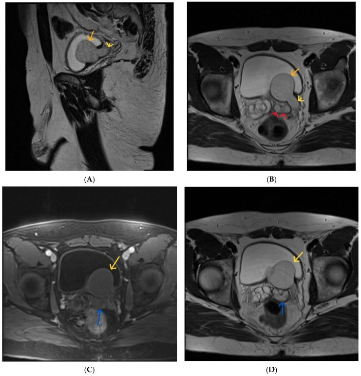
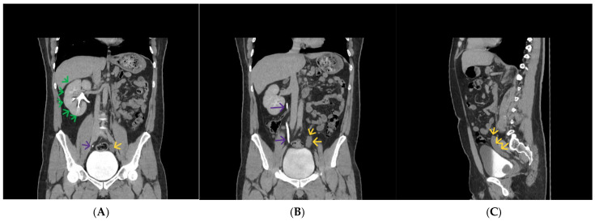
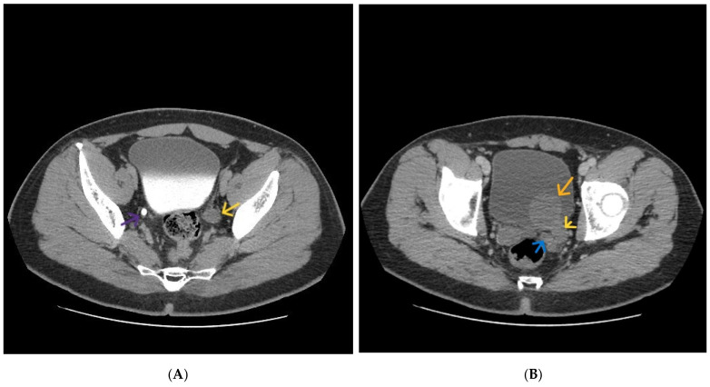

3097 — Hội chứng Zinner: nang túi tinh + bất sản thận cùng bên + tắc ống phóng tinh
Tags: pattern:nang-sau-bang-quang pattern:nang-tui-tinh pattern:bat-san-than pattern:gian-ong-phong-tinh vung:tui-tinh vung:sau-bang-quang vung:than vung:tiet-nieu protocol:MRI-tieu-khung protocol:CT-tiet-nieu protocol:sieung-am incidentaloma:nang-sau-bang-quang
Mức chắc chắn (certainty): tổng hợp y văn (literature synthesis) — ghép 1 tổng quan có ca minh họa (Diagnostics 2026, PMC13115000, CC BY 4.0), 1 ca + tổng quan tài liệu (Urol Case Rep 2026, PMC13100478, CC BY-NC-ND 4.0), 1 ca + tổng quan (BMC Urol 2026, PMC13169955, CC BY-NC-ND 4.0), 1 loạt ca MRI (Cureus 2026, PMC13221453, CC BY 4.0), 1 ca biến thể (Radiol Case Rep 2026, PMC13499116, CC BY-NC-ND 4.0). Số nào nguồn không đưa thì ghi "chưa rõ".
Bài này trả lời 4 câu hỏi của ca "nang sau bàng quang ở nam giới": (1) Nang này thuộc túi tinh, ống Müllerian, utricle hay ống phóng tinh? (2) Vì sao phải chụp/xem HỐ THẬN cùng bên? (3) Khi nào chỉ theo dõi, khi nào cắt nang? (4) Vô sinh do tắc thì xử trí thế nào? Đây là nang bên + bất sản thận cùng bên; hai bài cùng gamut nhưng khác vị trí: 3078 – Nang utricle & Müllerian (đường giữa) và 3077 – Áp-xe túi tinh (nang viêm, có sốt).
1. Tổng quan bệnh học – cơ chế hình ảnh
1.1 Phôi thai: một ống — ba cấu trúc
- Ống trung thận (mesonephric/Wolffian duct) cho ra mầm niệu quản (về sau thành niệu quản, bể thận, đài thận) và các cấu trúc sinh dục cùng bên: túi tinh, ống dẫn tinh, ống phóng tinh.
- Khiếm khuyết mầm niệu quản trong khoảng tuần 5–13 của thai kỳ → bất sản thận cùng bên (không có mô thận, không phải "thận teo").
- Khiếm khuyết đoạn xa ống trung thận → tắc ống phóng tinh → túi tinh giãn thành nang (giãn thứ phát do ứ dịch, không phải nang bẩm sinh đơn thuần).
- Tại sao nang to dần sau dậy thì: androgen làm túi tinh tăng bài tiết nhưng đường ra bị tắc → dịch tích trong nang, nang căng dần; vì vậy đa số được phát hiện ở tuổi 20–40, dù dị tật có từ bào thai.
1.2 TẠI SAO hình ảnh trông như "nang đơn thuần"
- Dịch túi tinh giàu protein và fructose nhưng ít tế bào → T2 rất sáng (gần nước), T1 thấp; nếu ứ đạm đặc hoặc có máu cũ → T1 sáng, dễ bị gọi nhầm là "khối đặc".
- Nang không ngấm thuốc, vách mỏng; không có thành dày, không nốt trong nang — nếu có thành dày/ngấm thuốc/nốt cần nghĩ u túi tinh (hiếm) hoặc áp-xe (bài 3077).
- Bất sản thận biểu hiện là hố thận trống (không thấy mô thận, không thấy bể thận) + thận đối bên phì đại bù; niệu quản cùng bên có thể dừng tận cùng mù (blind-ending) hoặc giãn thành nang dạng ureterocele — biến thể hay gặp (Diagnostics 2026, PMC13115000; Cureus 2026, PMC13221453).
- Tắc ống phóng tinh trên MRI: ống phóng tinh giãn > 2–3 mm, kéo dài tới verumontanum, đôi khi thấy nang trong tuyến tiền liệt.
1.3 Số liệu định lượng và dịch tễ
- Tần suất: 13 ca / ~280.000 lần siêu âm sàng lọc (Đài Bắc) ≈ 4,6/100.000; toàn y văn < 200 ca (Urol Case Rep 2026, PMC13100478; BMC Urol 2026, PMC13169955).
- Tuổi chẩn đoán: trung bình 29 tuổi (khoảng sơ sinh – người lớn); đa số 20–40 tuổi; thể trẻ vị thành niên hiếm.
- Triệu chứng thường gặp: tiểu nhiều 24,3%, đau khi tiểu 23,1%, đau tầng sinh môn 20,2%; ngoài ra đau sau xuất tinh, xuất tinh máu, vô sinh do tắc (Urol Case Rep 2026).
- Kích thước nang trong ca báo cáo: 3,3 × 3,8 cm (Urol Case Rep 2026); nang "khổng lồ" có thể chèn ép bàng quang gây bí tiểu (BMC Urol 2026).
- Vô sinh: tắc ống phóng tinh hai bên → azoospermia; trong ca 17 tuổi, thể tích tinh dịch 1,5 mL, không có tinh trùng, nhưng hút tinh trùng từ mào tinh (PESA) vẫn thu được tinh trùng → vô sinh do tắc, có thể điều trị (BMC Urol 2026).
2. Mẫu hình + chẩn đoán phân biệt theo vị trí (gamut)
- Quy tắc vàng — BÊN + THẬN: nang lệch bên (paramedian) + bất sản thận cùng bên = Zinner cho tới khi chứng minh ngược lại.
- Theo vị trí:
- Sau – bên bàng quang, trên tiền liệt tuyến: nang túi tinh (Zinner nếu kèm bất sản thận), nang ống phóng tinh.
- Đường giữa sau bàng quang: nang ống Müllerian, nang utricle (thường nhỏ, trong tiền liệt tuyến).
- Trong lòng bàng quang: ureterocele lạc chỗ ("cyst-within-cyst", liên quan hệ niệu quản đôi).
- Trước xương cùng, sau trực tràng: nang tailgut, nang trùng lặp ruột.
- Bất kỳ: áp-xe vùng chậu (sốt, thành dày, hạn chế khuếch tán).
- Theo tuổi/dậy thì: nang to nhanh sau dậy thì gợi ý nang túi tinh/ống phóng tinh (bài tiết androgen); nang không đổi kích thước gợi ý nang bẩm sinh đơn thuần.
- Gợi nhớ WOLFF: Wolffian remnant (Zinner), Obstruction of ejaculatory duct, Lateralized cyst, Failure of ipsilateral kidney, Fertility (vô sinh do tắc).
3. Bảng so sánh phân biệt (ma trận đối chiếu)
| Thực thể (entity) | Hình ảnh điển hình | Chốt vào (rule-in) | Chốt loại (rule-out) | Gợi ý xác nhận |
|---|---|---|---|---|
| Nang túi tinh trong Zinner | Nang paramedian sau–bên bàng quang, T2 rất sáng, T1 thấp (có thể sáng), vách mỏng; bất sản thận cùng bên; ống phóng tinh giãn | Nang bên + bất sản thận cùng bên + giãn ống phóng tinh | Nang đường giữa, hai thận đủ → không phải Zinner | MRI tiểu khung + FOV gồm hố thận; CT urography thì muộn |
| Nang ống Müllerian (nam) | Nang đường giữa giữa bàng quang và trực tràng, không thông túi tinh, hai thận bình thường | Đường giữa + không liên tục với túi tinh | Lệch bên + bất sản thận → Zinner | MRI đa mặt phẳng; không thấy ống phóng tinh giãn |
| Nang utricle (prostatic utricle) | Nang đường giữa trong tiền liệt tuyến, nhỏ, thông niệu đạo tiền liệt | Trong tiền liệt + thông niệu đạo | Nang lớn sau bàng quang, ngoài tiền liệt → không phải utricle | MRI; thường kèm lỗ tiểu đóng thấp (hypospadias) |
| Nang ống phóng tinh | Nang paramedian gần verumontanum, hình ống, kèm giãn túi tinh thượng nguồn | Hình ống + giãn túi tinh + vô sinh | Có bất sản thận → nghĩ Zinner (thể nang ống phóng tinh) | MRI T2; TRUS |
| Ureterocele lạc chỗ | Nang trong lòng bàng quang, "cyst-within-cyst", liên quan hệ niệu quản đôi | Nằm trong bàng quang + thấy niệu quản đổ vào | Nang ngoài bàng quang, không thấy niệu quản nối → không phải ureterocele | CT urography/MRU; soi bàng quang |
| Túi thừa bàng quang | Túi thông với lòng bàng quang, đầy/thay đổi theo lượng nước tiểu | Thông bàng quang + thay đổi khi đi tiểu | Nang kín, không thông → không phải túi thừa | So sánh trước/sau đi tiểu; CT |
| Nang tailgut / trùng lặp | Nang trước xương cùng, sau trực tràng, nhiều vách | Vị trí sau trực tràng + không liên quan đường niệu dục | Nang sát bàng quang/túi tinh → không phải tailgut | MRI; mô học nếu mổ |
| Áp-xe vùng chậu | Nang thành dày ngấm thuốc, khí, hạn chế khuếch tán, dịch quanh | Sốt + thành dày + hạn chế khuếch tán | Nang thành mỏng, không ngấm, không sốt → không phải áp-xe | CRP/máu; chọc hút |

MRI T2 (A, B, D, E, F) và T1 fat-sat sau tiêm (C): nang túi tinh bên trái (mũi tên đỏ), niệu quản trái giãn (mũi tên vàng), ureterocele trong bàng quang (mũi tên cam), ống phóng tinh giãn (mũi tên xanh). Nguồn: Diagnostics 2026 (PMC13115000), Fig. 4, CC BY 4.0.4. Protocol chụp + chiến lược xử trí
4.1 Protocol hình ảnh (thứ tự thực hành)
- Siêu âm (đầu tay): xác định hố thận trống, nang sau bàng quang, có thể thấy niệu quản mù; siêu âm qua trực tràng (TRUS) đánh giá túi tinh/ống phóng tinh.
- CT urography (nếu chưa MRI): thì muộn 5–10 phút để thấy niệu quản dừng mù, ureterocele, bất sản thận; không cần nếu MRI đã đủ.
- MRI tiểu khung — chuẩn tham chiếu (Diagnostics 2026, PMC13115000):
- Bắt buộc: T2 axial + sagittal + coronal; T1 axial.
- Bổ sung khi cần: T1 fat-sat (phân biệt đạm/máu), DWI (áp-xe/độ phức tạp), T1 sau tiêm (thành/ngấm thuốc).
- FOV phải gồm cả hố thận — đây là lỗi hay gặp nhất: chụp tiểu khung hẹp rồi bỏ sót thận bất sản.
- Đo và ghi: kích thước nang (3 chiều), bên, quan hệ với túi tinh cùng bên, ống phóng tinh (đường kính, có giãn/teo), niệu quản (mù/giãn/ureterocele), thận đối bên (phì đại bù).
4.2 Chiến lược xử trí
- Không triệu chứng, nang nhỏ: theo dõi bằng siêu âm/MRI định kỳ (ngưỡng thực dụng < 3 cm, chưa có đồng thuận tuyệt đối — ghi "chưa rõ").
- Có triệu chứng (chèn ép, nhiễm trùng tái diễn, đau, vô sinh do tắc): cắt nang qua nội soi ổ bụng/robot — kết quả tốt, ít biến chứng (BMC Urol 2026; Urol Case Rep 2026).
- Chọc hút ± xơ hóa: lựa chọn khi không mổ được; tái phát cao vì nang vẫn bài tiết — không phải điều trị triệt để (chưa rõ tỷ lệ tái phát chính xác trong y văn mở).
- Tắc ống phóng tinh: TURED (cắt ống phóng tinh qua nội soi) hoặc hút tinh trùng + ICSI khi không tái thông được — vô sinh do tắc nên tiên lượng tốt hơn vô sinh do suy sinh dục.
- Nghi u túi tinh (thành dày, nốt ngấm thuốc, nang phức tạp): cắt toàn bộ + mô học, không chọc hút đơn thuần.
flowchart TD
A[Nang sau bàng quang ở nam] --> B{Nang đường giữa hay lệch bên?}
B -->|Đường giữa| C[Nghĩ utricle hoặc Müllerian — bài 3078]
B -->|Lệch bên| D[Kiểm tra HỐ THẬN cùng bên]
D --> E{Thận cùng bên có không?}
E -->|Bất sản| F[Zinner: MRI xác nhận nang túi tinh và giãn ống phóng tinh]
E -->|Có| G[Nang túi tinh hoặc ống phóng tinh đơn thuần]
F --> H{Có triệu chứng?}
H -->|Không| I[Theo dõi định kỳ]
H -->|Có| J[Cắt nang qua nội soi hoặc robot]
J --> K[Vô sinh do tắc: TURED hoặc hút tinh trùng và ICSI]
5. Biến thể bình thường và cạm bẫy
- Cạm bẫy 1 — không xem hố thận: gọi nang "Müllerian" hoặc "utricle" chỉ vì nang nằm sau bàng quang; bất sản thận cùng bên là chốt chẩn đoán, bỏ sót = chẩn đoán sai và tư vấn sai về sinh sản.
- Cạm bẫy 2 — nhầm "đường giữa" và "lệch bên": Müllerian/utricle đường giữa; nang túi tinh lệch bên. Đây là bước 1 trong mọi thuật toán (Diagnostics 2026).
- Cạm bẫy 3 — bỏ sót ống phóng tinh: không thấy ống phóng tinh giãn/teo → bỏ mất thành tố "tắc" của tam chứng, dẫn tới đánh giá vô sinh không đầy đủ.
- Cạm bẫy 4 — ureterocele giả nang túi tinh: ureterocele lạc chỗ nằm trong lòng bàng quang, có "cyst-within-cyst" và niệu quản đổ vào; nang túi tinh nằm ngoài bàng quang. Cần trace toàn bộ niệu quản.
- Cạm bẫy 5 — T1 sáng = "khối đặc": dịch đạm đặc/máu cũ trong nang có thể T1 sáng; dùng T1 fat-sat + DWI + sau tiêm: nang không ngấm, không hạn chế khuếch tán mạnh.
- Cạm bẫy 6 — "thận teo" thay vì "bất sản": teo thận do bệnh mạch/mạn tính vẫn còn mô thận nhỏ; bất sản = không có mô thận. Chỉ bất sản mới đi với Zinner.
- Cạm bẫy 7 — bỏ kiểm tra túi tinh đối bên: Zinner một bên nhưng túi tinh đối bên có thể bất sản/teo → ảnh hưởng khả năng sinh sản.
6. Tự lượng giá — Blind Quiz
Ca 1 — Nam 26 tuổi, tiểu buốt và đau tinh hoàn trái 2 tháng, vô sinh.

- Câu hỏi: Bất thường ở đâu? Vì sao phải chụp thì muộn? Chẩn đoán liên quan gì tới sinh sản?
Bấm để hiện đáp án (findings + chẩn đoán)
- Dấu hiệu: thận phải phì đại bù (mũi tên xanh), hố thận trái trống (không có thận trái); niệu quản trái dừng tận cùng mù (mũi tên vàng); niệu quản phải bình thường (mũi tên tím).
- Chẩn đoán: bất sản thận trái + niệu quản mù — thành tố thứ nhất của hội chứng Zinner; phải tìm nang túi tinh trái và giãn ống phóng tinh.
- Liên quan sinh sản: tắc ống phóng tinh → vô sinh do tắc (azoospermia), có thể điều trị bằng TURED hoặc hút tinh trùng + ICSI.
- Nguồn ảnh: Diagnostics 2026 (PMC13115000), Fig. 2, CC BY 4.0.
Ca 2 — Cùng bệnh nhân, MRI tiểu khung: mô tả từng thành tố của tam chứng.
- Câu hỏi: Ba thành tố của Zinner nằm ở đâu? Vì sao nang T2 rất sáng? Có biến thể gì kèm theo?
Bấm để hiện đáp án
- Dấu hiệu: nang túi tinh trái nhiều thùy (mũi tên đỏ) T2 rất sáng; niệu quản trái giãn (mũi tên vàng); ống phóng tinh giãn (mũi tên xanh); ureterocele trong bàng quang (mũi tên cam); thận trái không thấy.
- Tam chứng: bất sản thận trái + nang túi tinh trái + tắc ống phóng tinh.
- Vì sao T2 sáng: dịch giàu nước, ít tế bào; T1 sáng hơn nếu đạm đặc/máu cũ.
- Biến thể: niệu quản mù tận cùng bằng ureterocele — nằm ngoài phổ kinh điển nhưng vẫn cùng bất thường ống trung thận.
- Nguồn ảnh: Diagnostics 2026 (PMC13115000), Fig. 4, CC BY 4.0.
Ca 3 — Nam 55 tuổi, đau tầng sinh môn, tiểu khó; CT có nang cạnh bàng quang.

- Câu hỏi: Hai cấu trúc hình ống giãn là gì? Phân biệt với ureterocele và túi thừa bàng quang thế nào?
Bấm để hiện đáp án
- Dấu hiệu: (A) niệu quản trái giãn (mũi tên vàng) cạnh niệu quản phải bình thường (tím); (B) ống phóng tinh giãn (mũi tên xanh), ureterocele (mũi tên cam).
- Phân biệt: ureterocele nằm trong lòng bàng quang, "cyst-within-cyst", liên quan hệ niệu quản đôi; túi thừa bàng quang thông với lòng bàng quang và thay đổi theo lượng nước tiểu; nang túi tinh nằm ngoài bàng quang, lệch bên.
- Nguồn ảnh: Diagnostics 2026 (PMC13115000), Fig. 3, CC BY 4.0.
Bài liên quan chéo
- 100 – Tổng quan hệ Bụng
- 3078 – Nang ống utricle & nang ống Müllerian (nang đường giữa)
- 3077 – Áp-xe túi tinh (nang viêm, có sốt)
- 3011 – Biến chứng niệu quản sau ghép thận (hẹp/rò niệu quản)
- 150 – Nang thận Bosniak & u thận (nang thận, khác nang túi tinh)
Không dùng để chẩn đoán độc lập khi chưa có người hướng dẫn.